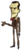
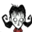

• Killing a
• Eating
• Prototyping a new item on


 or from
or from 
• Shaving Wilson's Beard
• Picking
This page currently lists all Sanity boosting items in the game. Below are tables showing how they compare.
| Action | Sanity |
|---|---|
| • Sleeping in a | +50 |
| • Sleeping in a • Killing a | +33 |
| • Repairing a | +20 |
| • Killing a • Eating • Prototyping a new item on
| +15 |
| • Eating • Shaving Wilson's Beard | +10 |
| • Eating Crock Pot Dishes except for • Picking | +5 |
| Name | Sanity (/min) | Notes |
|---|---|---|
| • Being near a | ≤+25 | The Star that can be summoned with a Star Caller's Staff gives a boost if stood near, but costs 20 sanity to summon. |
| ≤+25 | Must be very close to gain maximum effect. Best way is chopping the same tree or standing near a sleeping pig | |
| • Playing as Maxwell  | +20 | Constant due to his dapperness, a Nightmare Amulet is recommended to induce insanity for Maxwell |
| • Wearing | +6.7 | This is the most dapper clothing for sanity regain as it lasts for 25 days and restores a large portion of sanity per minute |
| • Being near the fire while playing as  | +≤? | Amount depends on strength of fire, although very weak with lighter, this perk can negate nighttime sanity loss completely |
|
• Wearing | +3.3 | These clothings can replace umbrellas as they can negate the sanity loss from rain (but they are unable to protect WX-78 from incured rain damage) |
| • Wearing | +2 | The 5 amulets will restore sanity until they are used, making it a slow but effective way of sanity regain |
| • Wearing | +1.3 | Garlands are the cheapest way of increasing sanity, but the worst |
This category has the following 2 subcategories, out of 2 total.
The following 68 pages are in this category, out of 68 total.
BCDEF |
F cont.GHIJKLMP |
P cont.RSTUW |